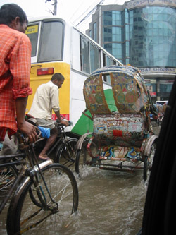
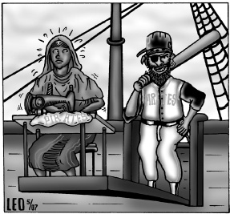

Submitted on Sat, 07/14/2007 - 8:15pm

Jason Fults represented the IWW's International Solidarity Commission and the Pittsburgh Anti Sweatshop Community Alliance in June of 2007. This year's monsoon (pictured, right and below) was particularly devastating. Workers were forced from their homes near the Export Zones and also unable to travel home to their villages. Workers were victimized by both employers and some "aid" agencies. The Pittsburgh Anti Sweatshop Community Alliance has made a request for information from US AID and hopes to find specific ways to support Garment Workers in Bangladesh in the future.
Read the complete Pittsburgh Sweatshop Audit HERE including the response from the city law department.
Submitted on Tue, 07/10/2007 - 6:02pm
 July 11, 2007 marks one year since the Pirates Baseball Club hosted the All Star Game and promised the people of Pittsburgh that they would investigate working conditions in the factories sewing Pirates’ apparel. As the Pittsburgh General Membership Branch of the IWW reminds the Pirates at their July 8 game at PNC Park against the Chicago Cubs, Pittsburgh has high standards for workers’ rights. The City’s Sports and Exhibition Authority has recommended the investigatory protocols of the Workers Rights Consortium (WRC), disclosure of wages and factory locations, truly independent investigations, and a commitment to the factories where investigations take place.
July 11, 2007 marks one year since the Pirates Baseball Club hosted the All Star Game and promised the people of Pittsburgh that they would investigate working conditions in the factories sewing Pirates’ apparel. As the Pittsburgh General Membership Branch of the IWW reminds the Pirates at their July 8 game at PNC Park against the Chicago Cubs, Pittsburgh has high standards for workers’ rights. The City’s Sports and Exhibition Authority has recommended the investigatory protocols of the Workers Rights Consortium (WRC), disclosure of wages and factory locations, truly independent investigations, and a commitment to the factories where investigations take place.
Submitted on Wed, 06/13/2007 - 6:09am
IndyKids is a free newspaper and teaching tool that aims to inform children on current news and world events from a progressive perspective and to inspire a passion for social justice and learning. It is geared toward kids in grades 4 to 8 and high school English Language Learners. http://www.indykids.net/
Fair Play and Fair Pay
Pittsburgh Baseball Fans Demand Better Treatment for Workers
By Amanda Vender
When you watch a baseball game, do you ever think about where the team’s hats, shirts and souvenirs were made? Some Pittsburgh Pirates fans did. When they looked into it, they found that Pirates and other teams’ gear is made in factories around the world, just like many other clothes, shoes and toys.
Submitted on Sat, 06/02/2007 - 5:26am
 Photo by Kenneth Miller - April 29, 2007 NYC, Columbia Law School/SweatFree Communities Conference. Bret Grote of the Pittsburgh Anti Sweatshop Community Alliance and Pittsburgh IWW, Carl Johnson from the United Workers Association of Maryland, Dale Wen of the International Forum On Globalization, Kalpona Aktar is the Secretary General of the Bangladesh Center for Worker Solidarity, Peter van Schaick is a NYC Employment Lawyer and friend of the IWW Starbucks Workers Union.
Photo by Kenneth Miller - April 29, 2007 NYC, Columbia Law School/SweatFree Communities Conference. Bret Grote of the Pittsburgh Anti Sweatshop Community Alliance and Pittsburgh IWW, Carl Johnson from the United Workers Association of Maryland, Dale Wen of the International Forum On Globalization, Kalpona Aktar is the Secretary General of the Bangladesh Center for Worker Solidarity, Peter van Schaick is a NYC Employment Lawyer and friend of the IWW Starbucks Workers Union.
Arena jobs promised for minorities
http://www.pittsbur ghlive.com/ x/pittsburghtrib /search/s_ 510086.html
By Jeremy Boren
TRIBUNE-REVIEW
Wednesday, May 30, 2007 The city-county Sports & Exhibition Authority on Tuesday promised to hire minorities to help build Pittsburgh's planned $290 million hockey arena and sided with a human rights group that wants the Pirates not to sell sports merchandise made in sweatshops.
Tim Stevens, executive director of the Black Political Empowerment Project, told SEA board members that he believes minorities historically have been left out of union construction jobs -- including the David L. Lawrence Convention Center, where the authority has met since it opened in 2003.
"This must cease," Stevens said. "We need to take a serious, honest look at minority and women participation in construction jobs and in providing goods and services."
SEA Executive Director Mary Conturo agreed.
"That's an issue we continue to focus on," she said, adding that the SEA employs a "diversity coordinator" to ensure minorities and minority-owned companies are included in contracts. "We will continue to make it a priority."
Submitted on Thu, 05/24/2007 - 1:25am
April 19, 2007 Pittsburgh's David L Lawrence Convention Center - At a meeting of the Sports and Exhibition Authority today - Executive Director Mary Conturo and Board Chairman John Chalovich jointly announced the board's request that the Pittsburgh Pirates adopt the Workers Rights Consortium's monitoring protocols. Sighting "difficulty gathering information" and following an exchange of letters between Chairman Chalovich and the Pittsburgh Pirates, the Board's request of the Pirates is a clear acknowledgment that Pittsburghers expect the Pirates to be responsible for the factories sewing Pirates apparel and that the Pirates have to catch the ball when our high standards for workers' rights are